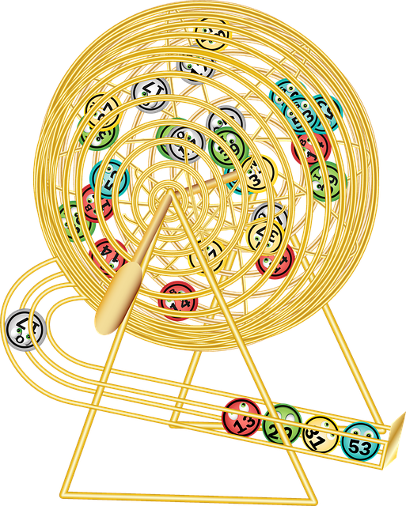

I.4.- Clase Bombo
Ejercicio Resuelto

Nuestra empresa ha entrado en contacto con un posible cliente dedicado a los juegos de azar tradicionales que quiere lanzar una nueva línea de productos digitales. Uno de los primeros productos será un bingo digital.
El equipo de desarrollo ha recibido el encargo de representar un bombo de un bingo. Para ello habrá que implementar una clase Bombo cuyos objetos contendrán una serie de bolas que podrán ir extrayéndose una a una con la particularidad de que una vez que se extraiga una bola ya no podrá volver a salir.
El número de bolas con el que podemos configurar los bombos estará entre 9 y 90.
Teniendo en cuenta esas especificaciones, realiza un análisis preliminar sobre cuáles serían los atributos apropiados para implementar la clase Bombo.
Se han previsto dos constructores para esta clase:
- un constructor con un parámetro, donde se indicará la capacidad del bombo (número de bolas cuando esté lleno);
- un constructor sin parámetros, que creará un bombo con la capacidad por omisión (noventa bolas).
Como métodos get para esta clase se ha pensado en aquellos que permitan:
- obtener la capacidad del bombo (número de bolas cuando está lleno):
getCapacidad; - obtener la cantidad de bolas que quedan por salir:
getCantidadBolasRestantes; - obtener la cantidad de bolas que ya han sido extraídas:
getCantidadBolasExtraidas; - indicar si el bombo está completamente lleno:
isCompleto; - indicar si el bombo está completamente vacío:
isVacio.
Implementa en Java esa lista de métodos.
En cuanto a una posible representación textual de los objetos Bombo, se ha planteado el siguiente formato:
Capacidad: xx bolas. Cantidad de bolas extraídas: zzdonde xx será la capacidad del bombo (número de bolas cuando está lleno) y zz el número de bolas que han sido extraídas hasta el momento. Algunos ejemplos de salida podrían ser:
Capacidad: 90 bolas. Cantidad de bolas extraídas: 0
Capacidad: 9 bolas. Cantidad de bolas extraídas: 9
Capacidad: 10 bolas. Cantidad de bolas extraídas: 7
Capacidad: 90 bolas. Cantidad de bolas extraídas: 63Teniendo en cuenta esas especificaciones, implementa un método toStringen Java para la clase Bombo.
El método "estrella" de esta clase es el de extracción de una bola, que debe evitar que se repitan bolas. Si el número de bolas que quedan por salir es cero, debería lanzarse una excepción, pues no se puede devolver ningún número.
También se nos ha pedido un método llamado reset, sin parámetros, que reinicie el bombo y lo vuelva a llenar con todas las bolas para empezar de nuevo. Este método además devolverá un entero que será la cantidad de bolas que ha habido que volver a introducir en el bombo.
Implementa el método reset.
Ejercicio Resuelto
Una vez que disponemos de la clase Bombo, estaría bien llevar a cabo algunas pruebas mediante algún programa (clase de pruebas con método main) que se asegure de que todo funciona correctamente.

Implementa un programa de prueba para la clase Bombo que lleve a cabo las siguientes acciones:
- Cree un bombo con la capacidad por omisión y muestre su estado (método
toString). - Solicite por teclado un número entero como capacidad para el bombo.
- Intente crear un bombo con esa capacidad. Si no es posible porque la capacidad no es válida (salta una excepción) o bien porque se introduce algún valor inapropiado como número entero, entonces el programa finaliza.
- Si el bombo ha podido ser creado correctamente, mostramos el estado del bombo (método
toString). - A continuación se ejecutará un bucle en el que se irán realizando extracciones de bolas y se irán mostrando por pantalla hasta que salte la excepción por bombo vacío.
- Una vez que el bombo esté vacío se muestra el estado del bombo (método
toString).
Una posible salida por pantalla del resultado de la ejecución del programa podría ser algo así:
BOMBO DE UN BINGO
-----------------
Prueba del constructor sin parámetros:
Creado objeto: Capacidad: 90 bolas. Cantidad de bolas extraídas: 0
Prueba del constructor con parámetros:
Introduzca el número de bolas (9-90): 10
Prueba del getNumBolas: 10
Prueba del getNumBolasExtraidas: 0
Prueba del getNumBolasRestantes: 10
Prueba del toString: Capacidad: 10 bolas. Cantidad de bolas extraídas: 0
Pruebas de extracción: 8 10 9 6 2 3 4 1 5 7
Error: bombo vacío.
Estado actual del bombo: Capacidad: 10 bolas. Cantidad de bolas extraídas: 10
Introduzca el número de bolas (9-90): 8
capacidad inválida: 8. FinalizamosEjercicio Resuelto

Una vez que disponemos de una implementación básica y funcional de la clase Bombo, nos han pedido una ampliación para que incorpore dos nuevos métodos que permitan:
- obtener un array con los números de bola que quedan en el bombo;
- obtener un array con los números de bola que ya han salido del bombo.
¿Cómo te plantearías añadir esta nueva funcionalidad? ¿Necesitarías atributos adicionales? ¿Tendrías que modificar la implementación de alguno de los métodos que ya tienes?
Implementa el método public short[] getBolasExtraidas()
que devuelve un array con los números de las bolas que ya han salido del bombo.
Implementa el método public short[] getBolasRestantes() que devuelve un array con los números de las bolas que aún permanecen en el bombo.
Por último, nos quedaría implementar algún programa de prueba para comprobar que esta clase funciona correctamente. Podríamos escribir por ejemplo un programa que generara un bombo de capacidad nueve bolas, que fuera extrayendo las bolas una a una y que se fueran mostrando por pantalla la lista (array) de bolas extraídas y la de bolas restantes. La salida por pantalla podría ser algo así:
PRUEBAS DE BOMBO MEJORADO
-------------------------
Instanciando bombo de capacidad 9 bolas.
Bombo creado.
Estado inicial del bombo: Capacidad: 9 bolas. Cantidad de bolas extraídas: 0.
Extraídas: []
Restantes: [1, 2, 3, 4, 5, 6, 7, 8, 9]
Pruebas de extracción:
Bola extraída: 9
Array de bolas extraídas: [9]
Array de bolas restantes: [1, 2, 3, 4, 5, 6, 7, 8]
Bola extraída: 1
Array de bolas extraídas: [9, 1]
Array de bolas restantes: [2, 3, 4, 5, 6, 7, 8]
Bola extraída: 8
Array de bolas extraídas: [9, 1, 8]
Array de bolas restantes: [2, 3, 4, 5, 6, 7]
Bola extraída: 3
Array de bolas extraídas: [9, 1, 8, 3]
Array de bolas restantes: [2, 4, 5, 6, 7]
Bola extraída: 6
Array de bolas extraídas: [9, 1, 8, 3, 6]
Array de bolas restantes: [2, 4, 5, 7]
Bola extraída: 2
Array de bolas extraídas: [9, 1, 8, 3, 6, 2]
Array de bolas restantes: [4, 5, 7]
Bola extraída: 5
Array de bolas extraídas: [9, 1, 8, 3, 6, 2, 5]
Array de bolas restantes: [4, 7]
Bola extraída: 7
Array de bolas extraídas: [9, 1, 8, 3, 6, 2, 5, 7]
Array de bolas restantes: [4]
Bola extraída: 4
Array de bolas extraídas: [9, 1, 8, 3, 6, 2, 5, 7, 4]
Array de bolas restantes: []
Error: Bombo vacío.
Estado final del bombo: Capacidad: 9 bolas. Cantidad de bolas extraídas: 9Escribe un método main en Java para realizar una prueba similar a ésta.